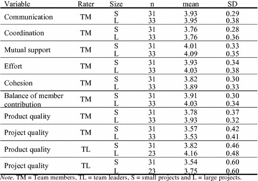
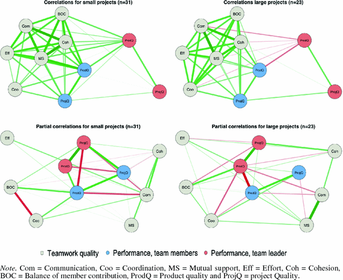

1 Introduction
Agile software development methods have become mainstream [1]. Originally aimed at development in small teams, agile methods are now used also in large software projects [6]. Teamwork is central in agile development [2, 3]. There are a growing number of studies on large-scale agile development that focus on topics such as how product owners are involved in development and how to achieve inter-team coordination [6, 7]. This paper explores differences between small and large-scale projects with respect to teamwork quality and its effect on team performance. We state the following research question: How does the effect of teamwork quality on team performance differ between small and large projects?
The teamwork quality aspects defined in Sect. 2 describe both aspects of interaction (communication, coordination, and mutual support) and motivation (effort, balance of member contribution, and cohesion) within a team. Hoegl et al. [4] suggest that with less task uncertainty and complexity in settings with fewer teams, that is, smaller projects, the motivational aspects are relatively more important and interactions aspects less important than in larger projects. We investigated whether the same findings would be confirmed in our study.
Teams that use the most popular agile development method, Scrum, focus mainly on managing internal relations during an iteration through daily meetings [5]. External relations are managed by the team and through the collaboration between the product owner and the customer and other stakeholders, and through demonstrating the product to stakeholders at the end of an iteration.
One important difference between small-scale and large-scale development is the number of relations that have to be managed. Large projects are characterized by complex knowledge boundaries among team members, more complex interplay with a larger number of technologies involved, and a larger set of stakeholders [6]. The first version of Scrum suggests handling interdependencies between teams in a new forum, the “Scrum of Scrums”. This forum has shown to be challenging when the number of teams are high [7].
2 Background
The Teamwork Quality (TWQ) constructs of this paper are based on Hoegl and Gemuenden [8], and also used in Lindsjørn et al. [2]. The six subconstructs of communication, coordination, balance of member contribution, mutual support, effort, and cohesion cover performance-relevant measures of internal interaction in teams. A brief description of the TWQ subconstructs is given below:
- Communication may be classified as to whether the communication is (1) internal versus external, (2) formal versus informal, and (3) written versus oral [10]. In agile teams, the team members are often placed closely together in open-plan offices to stimulate informal and open communication.
- Coordination may be described as managing dependencies between activities [11]. Common understanding when working on parallel subtasks, and agreement on common work-down structures, schedules, budgets, and deliverables are important aspects.
- Balance of member contribution refers to the ability to exploit all team members’ skills and expertise in such a way that it benefits the team [8].
- Mutual support refers to the team members’ ability and willingness to give assistance to other team members when needed [12].
- Effort refers to how much workload team members spend on the team’s tasks [8].
- Cohesion may be described as the tendency for a group to stick together in order to achieve its goals and objectives [13].
Team performance may be defined as the extent to which a team is able to meet established product quality requirements, as well as cost and time objectives, which are included in project quality. A more detailed description of the team performance concept is given in [2, 9]. This paper reports a study on the extent to which the effect of teamwork quality on team performance is moderated by the size of development projects.
With respect to the teamwork quality constructs, the main differences between small and large projects concern communication and coordination. Due to communication bottlenecks, large projects need more external, formal, and written communication than do small projects. Coordination in large projects is more challenging due to many development teams and dependencies between tasks among different teams.
3 Method
To operationalize the concepts of teamwork quality and team performance, we used a questionnaire reported in [8]. We define a small project to consist of one or two teams and a large project to consist of 10 or more teams. We collected data from 31 teams in small projects and 33 teams in two large projects. The data from the small projects was also used in a previously published study [2]. This data set also includes 11 teams in one large project used in this study. In total, the responses from 231 respondents are included. Another data set with 22 teams (89 respondents) was collected from an ongoing large project in a company that we collaborate with. All teams in the study used Scrum as the agile methodology. There are two rater categories in this study: team members and team leaders. All the team leaders were scrum masters; none of them were product owners or managers.
The respondents indicated their agreement with the items on a Likert scale from 1 (strongly disagree) to 5 (strongly agree). The questionnaire was previously found to have acceptable reliability, as measured by Cronbach’s alpha [13].
The value of a variable for a respondent is calculated as the mean of each of the questions that form that variable (i.e., similar to using the sum-score in internal consistency reliability estimates such as Cronbach’s alpha). The unit of analysis is the team itself, rather than the individuals in the team. When two or more team members (or two team leaders) respond from the same team, the results are aggregated using the mean. Although such aggregations can be problematic (e.g., when faced with strongly non-normal distributions), the number of responses per team in the available data is also too low to determine whether the distribution is non-normal. Thus, the aggregation procedure used in this study is a target for improvement in the future. Only team members rate teamwork quality (the independent variable). Both team members and team leaders rate team performance (the dependent variable).
The analysis was conducted using R [14]. The correlations are illustrated using the qgraph package [15]. The saturation of lines (edges) between the variables (nodes) shows the strength of the correlations, which are green for positive correlations and red for negative correlations. The placements of the nodes are calculated using the “spring” function of qgraph; highly correlated nodes are placed in close proximity and nodes with little or no shared variance with other nodes are placed distant from other nodes. Also, nodes with many strong relations to other nodes are centrally placed. The placement of nodes is averaged for project size so that differences in (Pearson and partial) correlations for small and large projects is more clearly displayed.
Responses to a few of the questions for some team members and team leaders were missing. For the six variables rated by team members, no variable had more than 0.4% missing data. However, product quality as rated by team leaders had 7.4% missing data (project quality had 1.1%). To not discard otherwise usable data, we imputed the missing data using the mice package [16] in R before aggregating each of the six variables that comprise teamwork quality and each of the two variables that comprise team performance.
4 Results
Table 1 shows the descriptive statistics of the analyzed variables for the small (S) and large (L) projects. All variables are normally distributed according to the Shapiro-Wilk test of normality, except three of the variables for large projects: Communication (p = 0.03), Mutual support (p = 0.04) and Product quality for team leaders (p = 0.01). Product and project quality data for team leaders was not available for 10 of the teams in one of the large projects, reducing n to 23. Only small differences in the mean values were detected for the two groups of project; the largest difference was that product and project quality was rated higher by team leaders in the large projects than in the small projects. Variability (SD) in ratings given by team members was higher for both product and project quality than for the six teamwork quality variables; variability was even higher for ratings given by team leaders.
Table 1.
Descriptive statistics of the investigated variables.

The top part of Fig. 1 shows the correlations between teamwork quality (grey) and team performance (blue and red). In small projects (top left), product quality (ProdQ) is more strongly correlated with the teamwork quality for both team members (blue) and team leaders (red) than is project quality (ProjQ). Product quality is, further, more centrally placed closer to teamwork quality. Project quality (for both team members and leaders) is more distantly placed with weaker correlations with the teamwork quality variables.

Fig. 1.
Pearson and partial correlations for small and large projects (Color figure online)
In large projects (top right of Fig. 1), the relation between teamwork quality and team performance is similar to that found in small projects when team performance is evaluated by the team members. However, for team leaders, product quality is negatively correlated with several teamwork quality variables as well as product quality as evaluated by the team members. In small projects, the correlations between product quality and teamwork quality as rated by team leaders are between 0.29 and 0.50, whereas they in large projects are either negative or zero (−0.47 to 0.02).
When a set of variables, such as those that form teamwork quality, are highly correlated, it is difficult to determine the unique contribution of each variable. The partial correlation explains what is uniquely shared between two variables that cannot be explained through the correlations with other available. The bottom part of Fig. 1 shows the partial correlations. For small projects (bottom left) there appears to be consensus (i.e., unique positive variance between two variables) in how team members and team leaders evaluate team performance; both product and project quality have positive partial correlations. However, team members and leaders disagree on project quality in large projects (bottom right), as shown by a strong negative partial correlation (thick red line) between the product quality for team leaders and team members. Furthermore, there is no agreement for project quality, as shown by a missing line between project quality for team members and team leaders.
Regarding the relation between the six subconstructs of TWQ and team performance, small and large projects differ in their partial correlations as well. For example, the partial correlations in small projects (bottom left in Fig. 1) show that balance of member contribution (BOC) and coordination (Coo) are positively associated with product quality, whereas communication (Com) is negatively associated with product quality. However, the pattern in the partial correlations for large projects (bottom right) is clearly different: except for balance of member contribution, which appears to have a positive relation to team performance in both small and large projects, the relation between other subconstructs of TWQ and team performance show few similarities between small and large projects.
5 Discussion and Conclusion
By analyzing data from 64 software teams, we have shown that there appears to be a disagreement between team members and team leaders in the evaluation of team performance for large projects. We have also shown that the effect of different teamwork quality variables (subconstructs) appears to influence team performance in small and large projects differently.
One possible reason why teamwork quality seems to affect product quality more than project quality in small projects is that team members and team leaders are working closely in small projects, and, therefore, there is little need for following a plan, updating documents and controlling the project by specific means; the progress of the team is apparent anyway. Effort is tailored towards the product.
Regarding large projects, a possible reason for the stronger relationship between teamwork quality and project quality when team performance was evaluated by team leaders is that project management, which is a primary concern of leaders, is more important in large projects. Interdependencies between development teams and various stakeholders, and interdependencies between tasks in different teams, need stronger mechanisms to control cost and time schedules. Such control is primarily the responsibility of team leaders.
Prior studies suggest that coordination is more important to team performance in large projects [4]. Our results show that coordination has some impact on project quality when evaluated by team members but is negatively correlated with product quality for both team members and team leaders. We would also have expected that the three motivation teamwork aspects (effort, cohesion and balance of member contribution) would have more impact in small projects, while the three interaction aspects (communication, coordination and mutual support) would have more impact on large projects. Our results show, however, that balance of member contribution and coordination were central to team performance in both small and large projects. Further, effort, mutual support, communication, and cohesion appear to show a common theme. This calls for further investigation.
The main limitation of this study concerns sample size. Although we had responses from more than three hundred team members and leaders, “large projects” in this paper is only represented by two projects and their respective organizations. The available data indicates that the values of the investigated variables differ between small and large projects, but the small sample for large projects means that caution should be made when generalizing the findings. Another limitation is that the analysed variables are ordinal (Likert-scale) which, ideally, should be analysed using non-parametric statistics (e.g., Spearman correlations and median values). However, we found no substantially different results when using Spearman correlations for the investigated variables.
In conclusion, this study suggests that prior findings on teamwork in agile development in small projects may not apply to large projects. Future studies should investigate the quality of interactions between teams to better adopt agile methods in large projects, and in particular pay attention to difference among different stakeholder in the rating of team performance.
Acknowledgement
We thank the anonymous reviewers for valuable comments. This work was partly funded by the Research Council of Norway through the projects TeamIT (grant 193236) and Agile 2.0 (grant 236759).

Open Access This chapter is licensed under the terms of the Creative Commons Attribution 4.0 International License (http://creativecommons.org/licenses/by/4.0/), which permits use, sharing, adaptation, distribution and reproduction in any medium or format, as long as you give appropriate credit to the original author(s) and the source, provide a link to the Creative Commons license and indicate if changes were made.
The images or other third party material in this book are included in the book's Creative Commons license, unless indicated otherwise in a credit line to the material. If material is not included in the book's Creative Commons license and your intended use is not permitted by statutory regulation or exceeds the permitted use, you will need to obtain permission directly from the copyright holder.
References
1.
Dingsøyr, T., Nerur, S., Balijepally, V., Moe, N.B.: A decade of agile methodologies: towards explaining agile software development. J. Syst. Softw. 85, 1213–1221 (2012)Crossref
2.
Lindsjørn, Y., Sjøberg, D.I.K., Dingsøyr, T., Bergersen, G.R., Dybå, T.: Teamwork quality and project success in software development: a survey of agile development teams. J. Syst. Softw. 122, 274–286 (2016)Crossref
3.
Dingsøyr, T., Fægri, T.E., Dybå, T., Haugset, B., Lindsjørn, Y.: Team performance in software development: research results versus agile principles. IEEE Softw. 33, 106–110 (2016)Crossref
4.
Hoegl, M., Weinkauf, K., Gemuenden, H.G.: Interteam coordination, project commitment, and teamwork in multiteam R&D projects: a longitudinal study. Organ. Sci. 15, 38–55 (2004)Crossref
5.
Stray, V., Sjøberg, D.I.K., Dybå, T.: The daily stand-up meeting: a grounded theory study. J. Syst. Softw. 114, 101–124 (2016)Crossref
6.
Rolland, K.H., Fitzgerald, B., Dingsøyr, T., Stool, K.-J.: Problematizing agile in the large: alternative assumptions for large-scale agile development. In: International Conference on Information Systems, Dublin, Ireland (2016)
7.
Paasivaara, M., Lassenius, C., Heikkila, V.T.: Inter-team coordination in large-scale globally distributed scrum: do scrum-of-scrums really work? In: Proceedings of the ACM-IEEE ESEM, pp. 235–238. IEEE, New York (2012)
8.
Hoegl, M., Gemuenden, H.G.: Teamwork quality and the success of innovative projects: a theoretical concept and empirical evidence. Organ. Sci. 12(4), 435–449 (2001)Crossref
9.
Pinto, M.B., Pinto, J.K.: Project team communication and cross functional cooperation in new program development. J. Prod. Innov. Manag. 7(3), 200–212 (1990)Crossref
10.
Malone, T.W., Crowston, K.: The interdisciplinary study of coordination. ACM Comput. Surv. 26(1), 87–119 (1994)Crossref
11.
Tjosvold, D.: “Cooperative and competitive goal approach to conflict”: accomplishments and challenges. Appl. Psychol. 47(3), 285-34 (1998)Crossref
12.
Mudrack, P.E.: Defining group cohesiveness. A legacy of confusion. Small Group Res. 20(1), 37–49 (1989)Crossref
13.
Nunnally, J.C., Bernstein, I.H.: Psychometric Theory, 3rd edn. McGraw-Hill, New York (1994)
14.
R Core Team: R: A language and environment for statistical computing. R Foundation for Statistical Computing, Vienna, Austria (2016)
15.
Epskamp, S., Cramer, A.O.J., Waldorp, L.J., Schmittmann, V.D., Borsboom, D.: qgraph: network visualizations of relationships in psychometric data. J. Stat. Softw. 48(4), 1–18 (2012)Crossref
16.
van Buuren, S., Groothuis-Oudshoorn, K.: mice: multivariate imputation by chained equations in R. J. Stat. Softw. 45(3), 1–67 (2011)Crossref